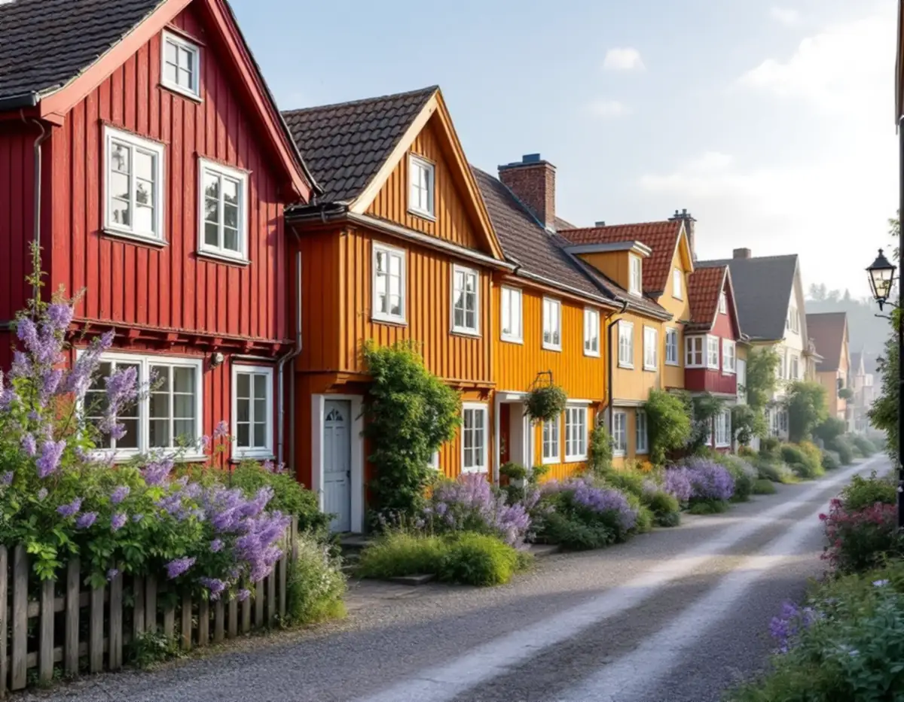
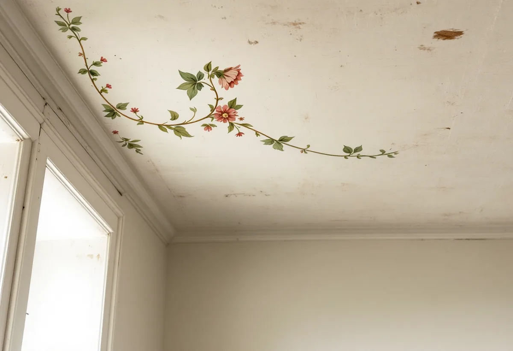

Titta på lagren
Vi skrapar försiktigt på ett dolt ställe och ser vilka färgtyper som finns.
På Södermalm kan en vägg ha målats om sedan 1700-talet, och det som syns i dag är summan av alla gånger. Geal Entreprenad AB målar väggar, tak och snickerier i lägenheter och hus på Södermalm och börjar med att ta reda på vilken färg som redan sitter där, eftersom det avgör om ytan ska tvättas, bättras eller målas om.

Översiktsplanens beskrivning av riksintresset pekar ut fem värdekärnor med tidig bebyggelse på malmarna: Fjällgatan, Katarinaberget, Vita bergen, Åsöberget och Östra Mariaberget. En del av husen i Vita bergen är timmerhus som byggdes för arbetare i de närliggande fabrikerna och hamnarna, och husen vid Bergsprängargränd och Mäster Pers gränd har små rum och låga takhöjder. Vid Fjällgatan nämner planen bevarade inredningar med dekorativt målade tak.
Planerna på att riva stora delar stoppades i slutet av 1960-talet, och områdena blev kulturreservat. Staden köpte då många av fastigheterna, och merparten av husen i reservaten ägs och förvaltas av AB Stadsholmen, som enligt planen restaurerar dem successivt för att ta fram de ålderdomliga interiörerna. Där bestämmer alltså fastighetsägaren över målningen. Stora delar av malmarna präglas i övrigt av den klassiska stenstaden från 1870–1930, med hyreshus som normalt har fem våningar.

Översiktsplanen konstaterar att de flesta äldre husen på malmarna har byggts om och till för olika tiders smak och behov, och att det därför är svårt att tala om ett originalutförande. Riksantikvarieämbetets handbok om byggnadsmåleri säger samma sak från målarens håll: varje hus har målats med tidstypiska färger och metoder både när det byggdes och när det rustades upp, och 1700- och 1800-talets sätt att använda linoljefärg, tempera och limfärg skiljer sig från 1900-talets.
Enligt handboken räcker det inte att välja en traditionell färgtyp, utan kulören och tekniken ska också passa just den byggnaden. Vid ommålning och bättring bör man i de flesta fall hålla sig till den färgtyp som redan finns på ytan. Den som byter till en modern färg på en gammal yta tar enligt handboken en teknisk risk, och det kan bli svårt att gå tillbaka utan att all färg tas bort. Vi börjar därför med att ta reda på vilket lager som ligger överst och vad som finns under det.
Riksantikvarieämbetet påpekar att en hel ommålning inomhus inte är nödvändig i varje fall. Är ytorna i gott skick bortsett från smuts och mindre skador kan man "tvätta för gott", alltså rengöra milt och bättra skadorna med samma färgtyp. Metoden används sällan i dag, skriver handboken, trots att resultatet ofta blir lättare att renovera nästa gång och äldre målerihantverk inte suddas ut. Ett oskadat limfärgstak som bara är smutsigt kan i regel torrborstas med en mjuk borste, och mindre partier kan gnuggas rena med inkråm från ett färskt franskbröd.
Bättring fungerar olika bra beroende på färgtypen. Statens fastighetsverk skriver att det kan vara svårt att bättra en yta som är målad med emulsionsfärg, eftersom bättringarna ofta syns. Linoljefärg går däremot att måla i många skikt utan att den gamla färgen måste bort. Därför tittar vi på färgtypen innan vi lovar att en skadad vägg kan lagas med några penseldrag, och säger till om ett helt rum behöver strykas för att resultatet ska bli jämnt.
Handboken råder att man vid renovering lämnar några små ytor helt obehandlade, gärna på undanskymda ställen, så att den som ska välja metod nästa gång kan se hur det var. Sådana provytor är i praktiken den bästa dokumentationen, och uppgifter om vilka material som användes bör också sparas. Ibland finns det mer under ytan än man tror. En genomtorkad äggoljetempera är i stort sett olöslig i vanliga lösningsmedel, och en äldre temperamålning som målats över med linoljefärg kan därför i regel tas fram igen.
Ligger lägenheten i ett hus som är särskilt kulturhistoriskt värdefullt får ändringar inte förvanska det, och Stockholms stad skriver att en detaljplan med utökad lovplikt kan kräva lov även för underhåll. Hur tapetlagren på samma väggar läses beskrivs under tapetsering på Södermalm, lister och dörrar under snickare på Södermalm och målning i stort på sidan om målare.
Vi skrapar försiktigt på ett dolt ställe och ser vilka färgtyper som finns.
Vi tar reda på om fastighetsägaren eller föreningen har krav på färg och metod.
Tvätt, bättring och hel ommålning prissätts var för sig, så att du kan välja.
Ytorna tvättas eller borstas innan något nytt läggs på.
Samma färgtyp som tidigare, med en provyta som lämnas orörd.
Du får en lista över färgtyper och kulörer som användes.
I en bostadsrätt på Södermalm ger målning av tak, väggar, golv och element rotavdrag, och likaså målning av innerdörrar och köksluckor. Skatteverket kräver att du äger bostaden, så den som hyr av ett fastighetsbolag kan inte få avdraget. Trapphus, entréer och fasader är gemensamma ytor och ger inget avdrag.
Avdraget är 30 procent av arbetskostnaden. Gränsen är högst 50 000 kr per person och år för rot och högst 75 000 kr för rot och rut tillsammans. Material och resor räknas inte in, och vi drar avdraget på fakturan.
Om ytan räcker med tvätt och bättring eller måste strykas helt, vilken färgtyp den kräver, hur många snickerier som ska med och hur mycket som måste skyddas i rummet påverkar priset mest. Du får ett skriftligt kostnadsförslag efter ett kostnadsfritt besök.
Fasad, fönster och invändig målning.
Målare i Stockholm →Vattenskador, ansvar och husens olika åldrar.
Badrumsrenovering på Södermalm →Kalkputs, kalkfärg och plåt på lister.
Fasadrenovering på Södermalm →Föreningens fönster, besiktigade före beslut.
Fönsterrenovering på Södermalm →Renovera, riva och sortera golvet.
Golvläggare på Södermalm →Slipa golven i den nyköpta lägenheten.
Golvslipning på Södermalm →Kokvrå, gasspis och kulturvärden i lägenheten.
Köksrenovering på Södermalm →Väggar, dörrar och förvaring i lägenhet.
Snickare på Södermalm →Ny tapet och gamla tapetlager.
Tapetsering på Södermalm →Lägenheten i takt med stambytet.
Totalrenovering på Södermalm →